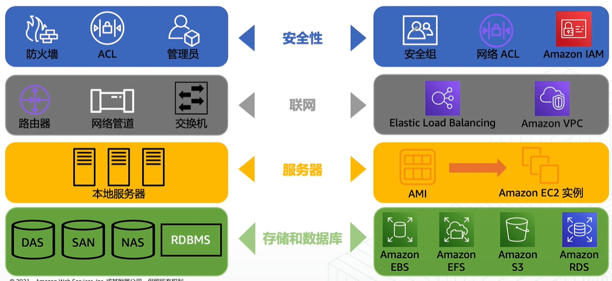
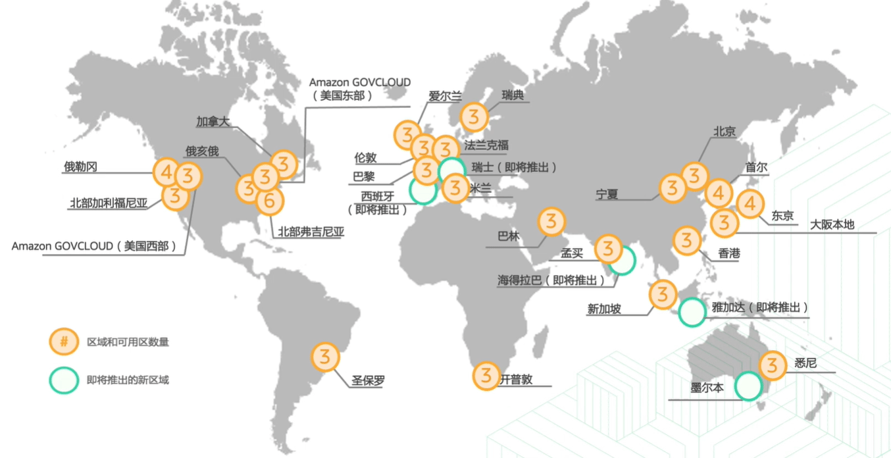
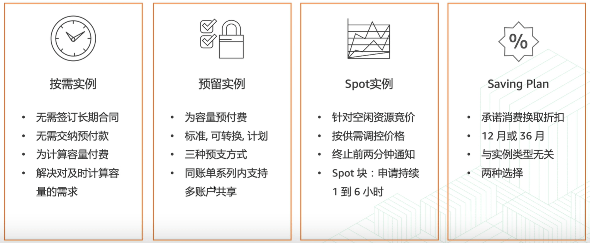
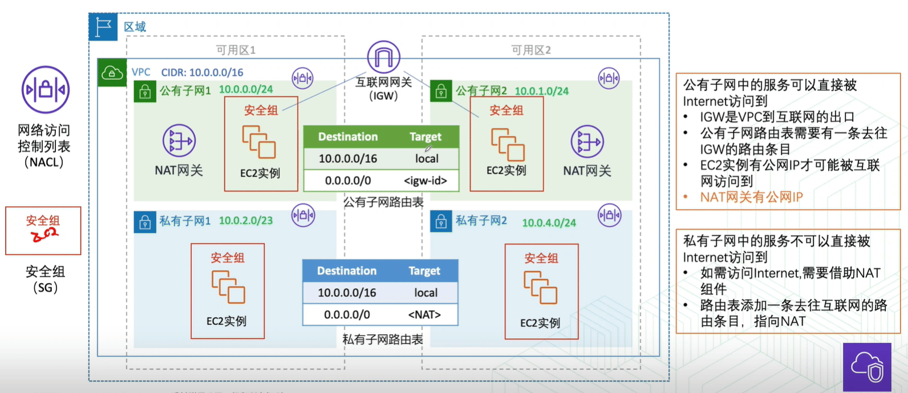
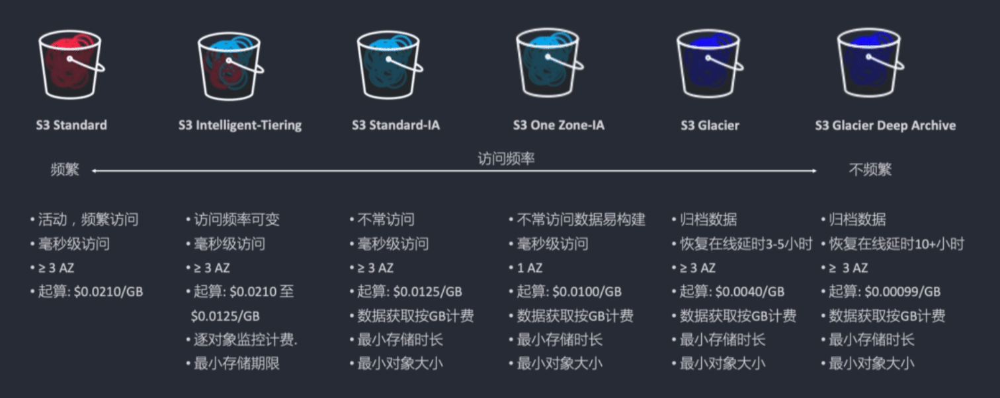
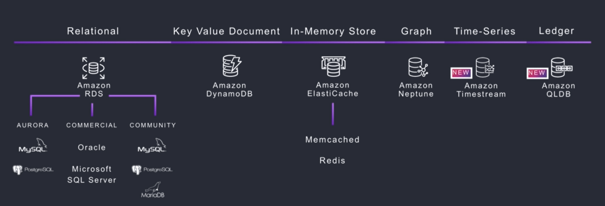
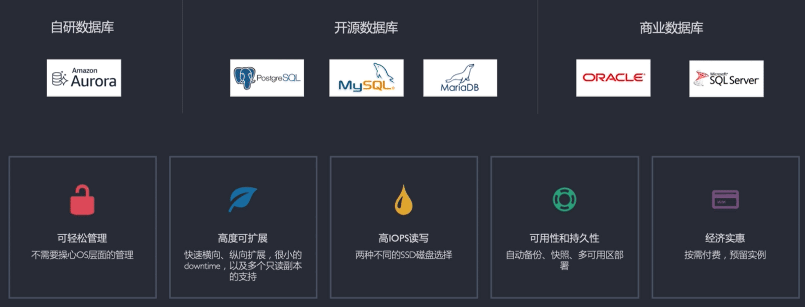

AWS使用
- TAGS: Linux
aws cli
s3
列出无生命周期的 s3 桶
aws s3 ls |awk '{print $3}' > a.log while read line; do aws s3api get-bucket-lifecycle-configuration --bucket $line &>/dev/null; state=$?; [ $state -ne 0 ]&& echo $line;done <a.log
列出 s3 的标签：
vim s3-tags.sh #!/bin/bash aws s3 ls |awk '{print $3}' > a.log > output-s3-tags.csv while read line; do aws s3api get-bucket-tagging --bucket $line --query '{_SubModule:TagSet[?Key==`_SubModule`]|[0].Value}' --output text | xargs echo $line, >> output-s3-tags.csv done <a.log
route53
aws route53 list-resource-record-sets --hosted-zone-id Z37G26BC7B1XVK >~/tmp/worker/dns.log cat dns.log |jq '.ResourceRecordSets|.[]|[.Name, .Type, .AliasTarget.DNSName, .ResourceRecords[]?.Value]|join(" | ")' cat dns.log |jq '.ResourceRecordSets|.[]|[.Name, .Type, .AliasTarget.DNSName, .ResourceRecords[]?.Value]|join(" | ")' | sort -t '|' -k3|grep -i rummy|awk -F'|' '{printf("%-50s|%-5s|%-50s|%s\n",$1,$2,$3,$4)}'
eks 添加node节点
# taskcenter 节点组增加节点，修改minSize=8,desiredSize=8 aws eks update-nodegroup-config --cluster-name AGT-PFGC-eks-prod --nodegroup-name AGT-PFGC-EKS-Taskcenter --scaling-config minSize=8,maxSize=99,desiredSize=8
ec2
ec2 开关机
# 开机 并检查 $i 为ec2实例id aws ec2 start-instances --instance-ids $i aws --region ap-south-1 ec2 describe-instances --filters "Name=instance-id,Values=${i}" --query 'Reservations[*].Instances[*].[PrivateIpAddress]' --output text # 关机 并检查 aws ec2 stop-instances --instance-ids $i aws --region ap-south-1 ec2 describe-instances --filters "Name=instance-id,Values=${i}" --query 'Reservations[*].Instances[*].[PrivateIpAddress]' --output text
ec2 标签
ec2需要设定标签，标签用于费用统计。其中 Application标签表示业务类型
Application Wallet/AppBE/CAS/Data/Other/Rummy
修改标签方法
cat new_ec2_id2021-11-24.txt | while read line; do aws ec2 create-tags --resources $line --tags Key=BusinessUnit,Value=PFG Key=Application,Value=Rummy Key=Environment,Value=StagingAndLoadTest Key=Owner,Value=Klaus.ma Key=Techteam,Value=PFG-China; done
查标签
aws ec2 describe-instances --region ap-south-1 \
--filters Name=tag:Name,Values=pfgc-ludo-staging-ec2-pfgc-new-stg-eks-app
cat ec2-tag.log |jq '.Reservations[].Instances[]|[.PrivateIpAddress, .State.Name, ([(.Tags[]?|[.Key, .Value]|join("="))]|join("@"))] | join("|")'
aws ec2 describe-instances \
--filters Name=instance-state-name,Values=running \
--query 'Reservations[*].Instances[*].{Instance:InstanceId,IP:PrivateIpAddress,InstanceType:InstanceType,AZ:Placement.AvailabilityZone,Name:Tags[?Key==`Name`]|[0].Value,_SubModule:Tags[?Key==`_SubModule`]|[0].Value,__Usage:Tags[?Key==`_Usage`]|[0].Value,ClusterName:Tags[?Key==`eks:cluster-name`]|[0].Value,Techteam:Tags[?Key==`Techteam`]|[0].Value}' \
--output table > a.log
cat a.log |grep None >b.log
cat b.log |grep -v RDS |sort -n -k 11 >c.log
根据 ip 查询
aws ec2 describe-instances --filters Name="network-interface.addresses.private-ip-address",Values="172.21.38.5" \ --query 'Reservations[*].Instances[*].{Instance:InstanceId,AZ:Placement.AvailabilityZone,Name:Tags[?Key==`Name`]|[0].Value,_SubModule:Tags[?Key==`_SubModule`]|[0].Value,IP:PrivateIpAddress}' \ --output table
权限
根账号开通账单权限： 右上角点击名字选择“账号” –> 下拉找到“IAM 用户和角色访问账单信息的权限”, 点击编辑“激活IAM访问权限”
目前没有可以直接直观看到所有资源的页面，可以通过以下方式来实现资源的查看：
- 配置想要的布局：https://ap-southeast-1.console.aws.amazon.com/console/home?region=ap-southeast-1
- 通过标签方式查找资源：https://ap-southeast-1.console.aws.amazon.com/resource-groups/tag-editor/find-resources?region=ap-southeast-1
- 资源浏览器：https://resource-explorer.console.aws.amazon.com/resource-explorer/home?region=ap-southeast-1#/home
S3
开放公网
桶–>权限–>阻止公有访问都打开
编辑存储桶策略：
视图或json
{
"Version": "2012-10-17",
"Id": "S3PolicyId1",
"Statement": [
{
"Sid": "statement1",
"Effect": "Allow",
"Principal": {
"AWS": "*"
},
"Action": "s3:GetObject",
"Resource": "arn:aws:s3:::{my-bucket}/*"
}
]
}
域名
修改名称服务器
Route53—域名—已注册域名
点击操作，编辑名称服务器
当前DNS ns-71.awsdns-08.com ns-684.awsdns-21.net ns-1645.awsdns-13.co.uk ns-1445.awsdns-52.org 阿里云解析系统分配DNS ns1.alidns.com复制 ns2.alidns.com复制
aws 基础入门
发展史
1994 母公司 amazon.com 成立
Jeff Bezos 创办了亚马逊，开始销售在线书箱，后来业务扩展到了在线音视频
2003 AWS和云计算的概念被提出来
Benjamin Black和Chris Pinkham共同发布了一篇文章，提出 想对亚马逊的基础架构进行解耦和抽象化来更好的提供服务。 甚至可以将这项服务卖给其他公司
2004 AWS Blog发布
AWS首席布道师Jeff Barr发布了一篇AWS博文
2006 AWS(Amazon Web Services)正式发布
SQS, EC2和S3服务在这个时间点发布
2008 海外竟争对手进入市场
谷歌、微软。 发布了EBS, CloudFront等服务
2013 发布了AWS认证
AWS进入中国，北京
- 2017 发布了宁夏区域
2019 发布了新会议
自动化、机器人、外太空


区域(Region)
- 地理位置
至少由两个可用区(AZ)组成- 跨区域启用和控制
数据复制 - 区域之间使用
亚马逊科技主干网络通信
可用区(Availability Zone)
- 由
一个或多个数据中心组成 - 专为
故障隔离而设计 跨可用区部署，提升弹性和可用性- 使用
高速专用链接与其他可用区互连
计算服务
ec2
- 控制台创建：选择区域、选择AMI、选择实例类型、配置实例(网络、存储、脚本等)、审核启动(密钥对)
AMI是包含软件配置(如操作系统、应用程序和应用程序服务器)的模板
可基于以下特征选择要使用的AMI
- 区域
- 支持架构：X86 or ARM
- 架构：32位 or 64位
- 虚拟化类型：HVM or PV 即硬件虚拟化或者半虚拟化
- 操作系统
- 启动许可：用于映像文件的管理和分配
- 根设备存储类型：实例存储 or EBS
- 实例类型： 建议尽量选新一代的，性能和性价比都会有提升
使用用户数据：启动ec2实例时执行的脚本
默认情况下，用户数据脚本对每个实例执行一次
- Linux 脚本–由 cloud-init 执行
- Window 批处理脚本 或者 PowerShell脚本 – 由EC2Config服务执行
- EC2定价模型
- 预留实例：按实例类型预留。 不灵活
- Saving Plan:
- 按计算： 提高折扣34折 66%
- 按实例： 提高折扣28折 72%
Spot 实例
最低可以到按需实例的1折

资源标签(方便管理)
Name: Demo-ec2 Env: Demo Department: T&C Project: Hands-on
网络服务
- vpc
- route53
- cloudfront 内容分发网络
- VPN
- DirectConnect(DX) 专线
- API Gateway
- Global Accelerator 全球统一路由。用同一个ip地址把流量导入不同地域地址
- AWS PrivateLink 用内部网络访问公有资源。如访问s3
VPC
- 允许完全控制网络配置，包括
- internet协议(IP)地址范围
- 子网创建
- 路由表创建
- 网络网关
- 安全配置
VPC功能
- 基于区域和可用区的高可用性构建
- 每个Amazon VPC都位于一个区域内
- 每个账户可以创建多个VPC
- 子网
- 用过划分VPC内的空间
- 每个子网位于一个可用区内
- 公有子网，关联互联网网关
- 私有子网，关联NAT网关

安全组与NACL
- 安全组
- 实例级别防护
- 与实例操作系统无关
- 有状态
- 只有“允许”规则
- NACL
- 子网级别防护
- 无状态
- 规则具有优先级
- “允许”和“拒绝”规则
存储服务
- EBS(Amazon Elastic Block Store) 特点：实例的硬盘
- S3(Amazon Simple Storage Service) 特点：1写多读
- EFS(Amazon Elastic File System) 特点：文件共享。多实例同一时间频繁读和写
- ……
s3 旨在进行无缝扩展和提供 99.999999999%的持久性
- 存储任意数量的对象，存储空间无限
- 单个对象的大小不超过5TB，对文件类型没有限制
- 数据以冗余方式存储。持久性 D: 11个9。 可用性4个9 99.99%
- 存储桶名称在 Amazon S3的所有现有存储桶名称中必须具有唯一性
- 通过互联网直接访问
- 对象上传或删除可以触发通知、工作流程，甚至触发脚本
- 传输及静态数据加密
- 多种存储类适应企业不同存储需求
特点：1写多读
访问权限：权限策略

S3常用使用案例
- 存储应用程序数据
- 静态网站托管。比使用ec2便宜很多
- 备份和灾难恢复(DR)
- 用于大数据的临时区域
- …..
数据库服务
- RDS
- Amazon DynameDB 非关系型数据库
- Amazon ElastiCache 内存级别缓存
- Amazon Neptune 图形数据库
- Amazon Timestream 时间序列
- Amazon QLDB 分类账数据库
选择合适的数据库类型
根据工作负载选择技术，而不是反之
从一系列关系数据库引擎、NoSQL解决方案、数据仓库选项和搜索优化的数据存储中进行选择
数据库解决方案注意事项
读写需求
吞吐量、读写能力。来水平扩展还是垂直扩展
总存储要求
存储会达到什么级别，PB、TB？ 存储的数据类型。字符数据、 文档集合、数据集之间有无强关联性？有没有严格的格式，有没有复杂的查询
- 典型的对象大小以及这些对象的访问权限性质
支持的最大并发是多少？ 对于事务性的要不要求基于ACID的支持
持久性要求
数据的丢失几率，可用性每年可能停机的时间。恢复到正常要花多少时间，达到什么合规级别
- 延迟要求
- 支持的最大并发用户数
- 查询的性质
- 完整性控制所需的强度
SQL数据库与NoSQL数据库
| 关系/SQL | NoSQL | |
| 数据存储 | 行和列 | 键值、文档和图表 |
| 架构 | 固定 | 动态 |
| 查询 | 使用SQL | 主要面向文档的集合 |
| 可扩展性 | 垂直 | 水平 |
Amazon Aurora vs. Amazon RDS
| 功能 | Amazon Aurora | Amazon RDS |
| 副本数 | 最多15个 | 最多5个 |
| 复制类型 | 异步(毫秒级) | 异步(秒级) |
| 复制对性能影响 | 影响存储层 | 影响主库 |
| 故障转移目标 | 读副本(无数据丢失) | 从库(可能有分钟级别的数据丢失) |
| 存储 | 最多64TB，自动扩展 | 最多64TB，需指定存储上限 |


IAM
json
Effect = allow|deny
Action = <服务名>:<API>s3:getobject
Resoure= ar:awslaws-cn:服务名:region(cn-orth-1):12位:资源名称
[Condition] = 时间|IP